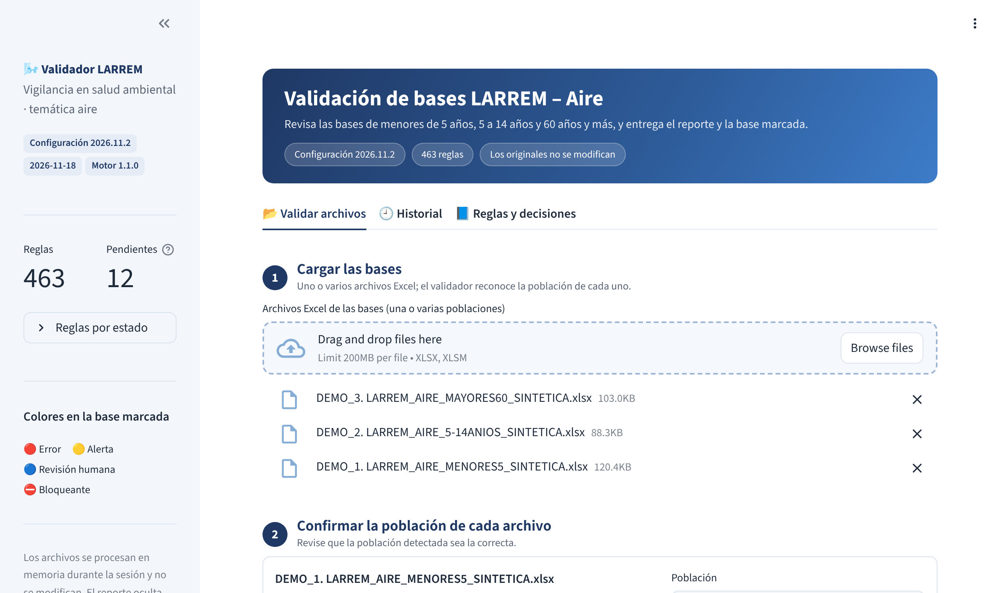
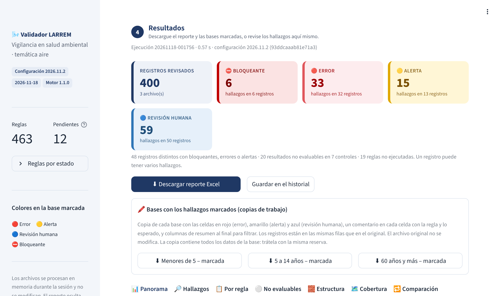
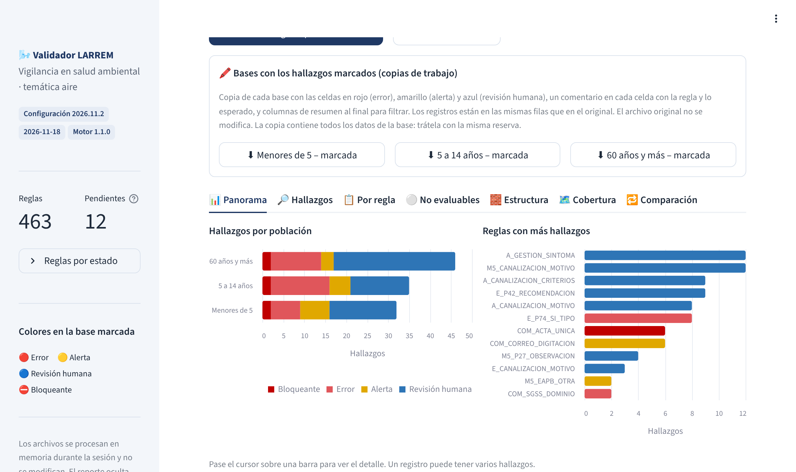

Validador de bases LARREM – Aire
Tutorial de instalación y uso · versión 2026.11.2 · 18 de noviembre de 2026
El validador revisa las bases de las encuestas de aire (menores de 5 años, 5 a 14 años y 60 años y más) y entrega un reporte en Excel y una copia de cada base con los errores marcados. Nunca modifica los archivos originales. Funciona en su propio equipo: las bases no salen del computador.
1. Dónde descargarlo
- Entre a github.com/wilsonsr/validador_larrem/releases. No necesita cuenta de GitHub.
- En la versión más reciente (arriba, con la etiqueta Latest), en Assets, pulse validador_larrem_2026.11.2.zip.
- El zip trae todo: el validador, este tutorial y tres bases de demostración sintéticas para practicar.
2. Qué contiene el paquete
| Archivo o carpeta | Para qué sirve |
|---|
| TUTORIAL_VALIDADOR_LARREM.pdf | Este documento |
| iniciar_validador.bat | Abre el validador (doble clic) |
| datos_demostracion\ | Tres bases sintéticas, una por población: ningún registro corresponde a una persona |
| configuracion\aire\ | Las reglas, el catálogo de variables y las decisiones pendientes |
| docs\ | Guía de uso, actualizaciones, mantenimiento de reglas, decisiones y publicación en la nube |
| src\, app.py, herramientas\, tests\ | El programa. No es necesario abrirlos |
3. Requisitos
- Windows 10 u 11.
- Python 3.10 o superior (se probó con Python 3.13). Si no lo tiene, vea el paso 4.2.
- Internet solo la primera vez, para descargar los componentes (ocupan unos 500 MB en disco).
- Un navegador (Chrome, Edge o Firefox).
4. Instalación (solo la primera vez)
4.1 Descomprimir el paquete
- Mueva el archivo descargado (validador_larrem_2026.11.2.zip) a una carpeta suya, por ejemplo Documentos. Evite OneDrive y rutas muy largas.
- Clic derecho sobre el archivo → Extraer todo… → Extraer.
- Abra la carpeta validador_larrem que se creó.
No ejecute el validador desde dentro del .zip sin extraerlo: no funcionará.
4.2 Instalar Python (si no lo tiene)
- Para saber si ya lo tiene: tecla Windows, escriba cmd, Enter, y en la ventana negra escriba py --version o python --version. Si aparece Python 3.10 o superior, siga al paso 4.3.
- Si no: entre a python.org/downloads/windows y descargue el instalador de Python 3.13 (64 bits), la versión con la que se probó el validador.
- Al instalar, marque la casilla “Add python.exe to PATH” antes de pulsar Install Now.
- Si no tiene permisos de administrador, elija Customize installation y deje desmarcado for all users: la instalación queda solo para su usuario.
Si su equipo tiene Anaconda, el validador también puede usar ese Python siempre que python --version responda en la ventana cmd. Si no responde, instale Python desde python.org como se indica arriba.
4.3 Primer arranque
- Doble clic en iniciar_validador.bat.
- Si Windows muestra “Windows protegió su PC”, pulse Más información → Ejecutar de todas formas.
- Se abre una ventana negra que dice Creando el entorno de Python e Instalando dependencias. Espere: tarda entre 2 y 10 minutos según la conexión.
- Al terminar, se abre el navegador con el validador. No cierre la ventana negra mientras lo usa.
Las siguientes veces, el doble clic abre el validador en segundos y no necesita internet.
5. Uso paso a paso
5.1 Cargar las bases
Arrastre los archivos .xlsx al recuadro 1. Cargar las bases, o pulse Browse files para elegirlos. Para la primera prueba use las tres bases de la carpeta datos_demostracion. Puede cargar una, dos o las tres poblaciones a la vez.

Pantalla inicial con las tres bases de demostración cargadas. A la izquierda, la versión, el número de reglas y la leyenda de colores.
5.2 Confirmar la población
El validador reconoce la población por las columnas y el prefijo del acta (AR02 menores de 5, AR03 de 5 a 14, AR04 de 60 y más). Si la confianza es alta o media ya viene seleccionada. Si es baja, elíjala en la lista.
5.3 Definir los parámetros
| Parámetro | Qué poner |
|---|
| Periodo esperado | Fechas de inicio y fin del corte. Las encuestas fuera del periodo salen como error. |
| Etapa de la base | Recodificación (recomendado): revisa las respuestas y las variables CODIF. Captura: solo las respuestas. Enriquecimiento: además coordenadas, ACRE y PM2,5. |
| Subredes y localidades | Déjelas en “Todas”, o elija las que le corresponden para detectar registros de otra zona. |
| Reporte anterior | Opcional: el reporte del corte anterior para ver qué hallazgos son nuevos, siguen o se resolvieron. |
5.4 Validar y descargar
Pulse ▶ Validar. En segundos aparecen las tarjetas de resumen (registros, bloqueantes, errores, alertas y revisión humana) y los botones:

- Descargar reporte Excel: el resumen y el detalle de todos los hallazgos.
- Menores de 5 – marcada, 5 a 14 años – marcada, 60 años y más – marcada: una copia de cada base con los hallazgos marcados, para corregir.
- Guardar en el historial: guarda la ejecución en resultados\ejecuciones\ para compararla después.
5.5 Panorama y pestañas
Debajo de los botones, la pestaña Panorama muestra los hallazgos por población y las reglas con más hallazgos; al pasar el cursor por una barra se ve la descripción de la regla. Las demás pestañas permiten filtrar los hallazgos, ver el resultado por regla, los no evaluables, la estructura de cada archivo y la comparación con el corte anterior.

6. Cómo leer los resultados
6.1 Severidades
| Severidad | Significado |
|---|
| Bloqueante | Impide usar la base: ID o acta repetidos, edad fuera de la población. |
| Error | Contradice una regla documentada. Se corrige en el origen. |
| Alerta | Probable error. Verificar antes de corregir. |
| Revisión humana | La guía pide revisar el caso (por ejemplo, NS/NR o canalización). No es un error. |
Un resultado no evaluable significa que el control no se pudo hacer (falta una columna, falta un dato o hay una decisión pendiente). Nunca cuenta como cumplido.
6.2 La base marcada
- Cada registro está en la misma fila que en el original y que en el reporte.
- Pase el cursor sobre una celda coloreada: el comentario dice la regla, lo esperado, el detalle y la acción.
- Las cuatro columnas Validación: … al final resumen cada fila. Filtre Validación: hallazgos mayor que 0 para ver solo los registros por corregir.
- La revisión humana se colorea en azul: no es un error, pide verificar el caso (casi siempre en Observaciones). No suma en Validación: hallazgos.
6.3 El reporte Excel
| Hoja | Contenido |
|---|
| A_Resumen | Archivos, totales por severidad y registros afectados |
| B_Hallazgos | Un hallazgo por fila. Columnas amarillas para el seguimiento del equipo |
| C_No_evaluables | Controles que no se pudieron hacer y por qué |
| D_Estructura | Columnas nuevas, faltantes, vacías o renombradas |
| E a I | Resultado por regla, catálogo de reglas, cobertura, decisiones y comparación |
7. Validar el siguiente corte
- Cargue las bases nuevas y ajuste el periodo.
- Suba el reporte del corte anterior en Reporte de una ejecución anterior, idealmente con los estados que diligenció el equipo, o elija una ejecución guardada en el historial.
- En la pestaña Comparación verá los hallazgos nuevos, persistentes y resueltos.
8. Problemas frecuentes
| Qué pasa | Qué hacer |
|---|
| “No se encontró Python en este equipo” | Instale Python (paso 4.2) marcando “Add python.exe to PATH” y vuelva a ejecutar. |
| “No se pudieron instalar las dependencias” | Revise la conexión. Si la red usa proxy, pregunte a sistemas o al responsable del validador el dato del proxy. Luego borre la carpeta .venv y vuelva a ejecutar. |
| La ventana negra se cierra sola | Abra cmd, arrastre iniciar_validador.bat a la ventana y pulse Enter para leer el mensaje. |
| El navegador no se abre | Abra el navegador y escriba localhost:8501. |
| Se abrió el validador dos veces | Si ya había uno abierto, el nuevo usa otra dirección (por ejemplo localhost:8502). Cierre la ventana negra que sobra. |
| Un archivo dice “población no confirmada” | Elija la población en la lista del paso 2. |
| El antivirus bloquea el .bat | Avise al responsable del validador; puede ser necesario que sistemas autorice la carpeta. |
9. Cerrar y actualizar
- Cerrar: cierre la pestaña del navegador y la ventana negra.
- Saber qué versión tiene: aparece en la barra lateral y en la hoja A_Resumen del reporte.
- Actualizar a una versión nueva:
- Cierre el validador.
- Si quiere conservar su historial, copie la carpeta resultados\ejecuciones a otro lugar.
- Descargue la versión nueva desde Releases (sección 1) y extráigala en una carpeta nueva.
- Si lo guardó, copie el historial en la carpeta nueva.
- Abra iniciar_validador.bat. Si la versión nueva usa otras librerías, las instala sola (requiere internet unos minutos).
- Qué cambió: lo dice la página de la versión en Releases y el archivo CHANGELOG.md.
9.1 Pedir un cambio o reportar un problema
- Con cuenta de GitHub: pestaña Issues → New issue.
- Sin cuenta: escriba al responsable del validador.
- Indique la población, el nombre de la regla, la fila de Excel del caso y qué esperaba. No escriba nombres, documentos ni direcciones: la fila y el ID SIVIGILA bastan.
- Cada solicitud recibe un número (SOL-027, SOL-028…) y queda en docs\registro_solicitudes.csv con la decisión tomada. El proceso completo está en docs\actualizaciones.md.
10. Cuidado con los datos
- Las bases reales, la base marcada y los reportes contienen datos personales y de salud. Guárdelos en carpetas con acceso restringido y no los envíe por correo ni chat sin autorización.
- El reporte oculta por defecto nombres, identificación, dirección, teléfono y correo; la base marcada no los oculta.
- Las bases de demostración son sintéticas: las respuestas se sortearon y los nombres, documentos, direcciones y colegios son inventados. Tienen errores sembrados a propósito y no sirven para análisis.
- El repositorio de GitHub es público: contiene solo el programa, las reglas y la documentación. Nunca adjunte bases ni reportes en una Issue.
- No suba bases reales a una versión publicada en internet sin autorización de la SDS.
Las reglas son una propuesta en revisión por el equipo técnico de bases de aire. Las decisiones pendientes están en la hoja H_Decisiones del reporte y en docs\decisiones_pendientes.md.